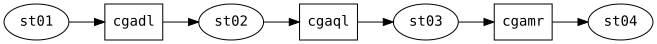
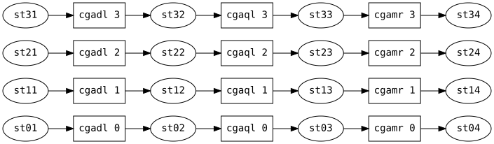
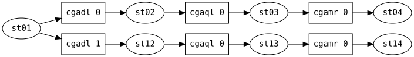
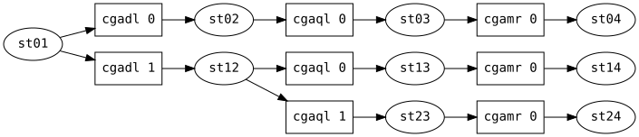

Table of Contents
1. NEXT generalize cgast state propagation
- These points refer to cga/sample-05-i. cga/sample-05-i is not to be changed; This tree, cga/sample-05-im, can copy as needed.
- Problem: cgast state propagation in single-machine-mrva/cga gets complex when applied to multi-run scenarios; branching and tracking state needs to be addressed.
For cga, the docs state: Because stdout is only the CGAST, the components pipe together:
submitted=$( echo '{}' \ | cgadl getmeta db-collection.global/metadata.sql \ | cgadl select --user demo primary_language cpp \ | cgadl download --output-dir "$MRVA_DB_SERVE_DIR" \ | cgaql index ../sample-query \ | cgaql select --user demo language cpp \ | cgaql pack \ | cgamr submit --name demo-1 --user demo --language cpp )
The cgast flows though a pipe; if we consider intermediate states and operations, we have, for example,
cgadl < st01 > st02 cgaql < st02 > st03 cgamr < st03 > st04
In data flow form, this is just a chain / linked list
st01 -> cgadl -> st02 -> cgaql -> st03 -> cgamr -> st04

- In actual use, there will be more than one chain. We can have multiple
parallel chains, or even subtrees.
Thus, the flow topology is more complex.
let the numbered arguments to cga* denote distinct parameters.
The parallel case
st01 -> cgadl 0 -> st02 -> cgaql 0 -> st03 -> cgamr 0 -> st04 st11 -> cgadl 1 -> st12 -> cgaql 1 -> st13 -> cgamr 1 -> st14 st21 -> cgadl 2 -> st22 -> cgaql 2 -> st23 -> cgamr 2 -> st24 st31 -> cgadl 3 -> st32 -> cgaql 3 -> st33 -> cgamr 3 -> st34

- A sample nested branch case.
First run is
st01 -> cgadl 0 -> st02 -> cgaql 0 -> st03 -> cgamr 0 -> st04
Then user refines the DB choice via cgadl.
st01 -> cgadl 1 -> st12 -> cgaql 0 -> st13 -> cgamr 0 -> st14
Together, these form a tree.

Another nested branch case: First run is
st01 -> cgadl 0 -> st02 -> cgaql 0 -> st03 -> cgamr 0 -> st04
Then user refines the DB choice via cgadl. This now yields a tree
st01 -> cgadl 1 -> st12 -> cgaql 0 -> st13 -> cgamr 0 -> st14
Now additionally refine the query choice via cgaql
st01 -> cgadl 1 -> st12 -> cgaql 1 -> st23 -> cgamr 0 -> st24
